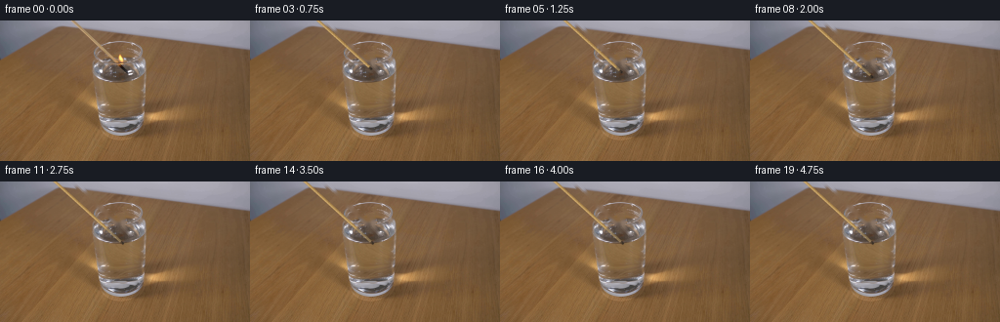
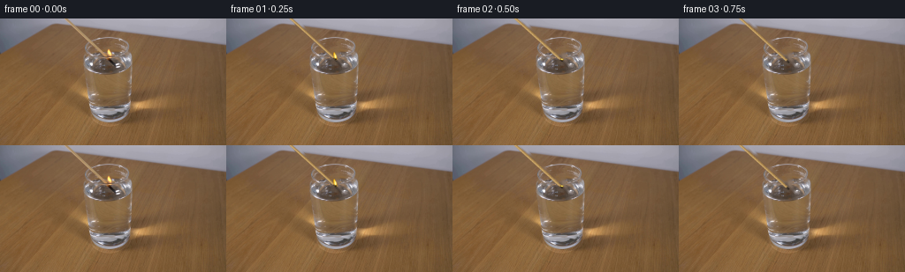
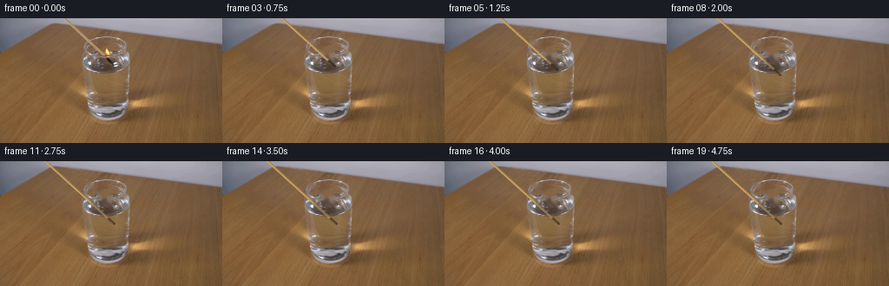
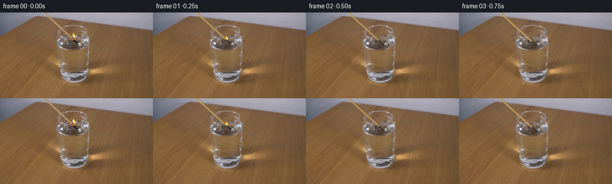
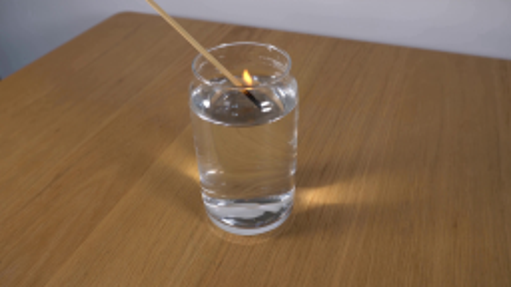
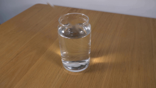
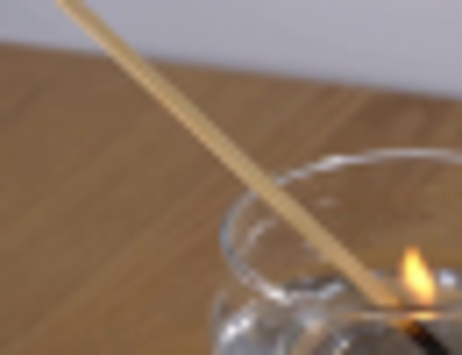
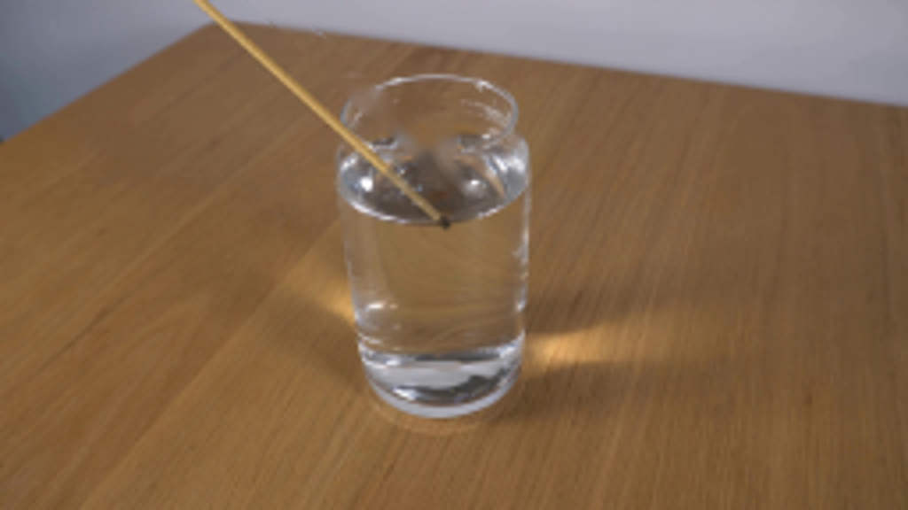
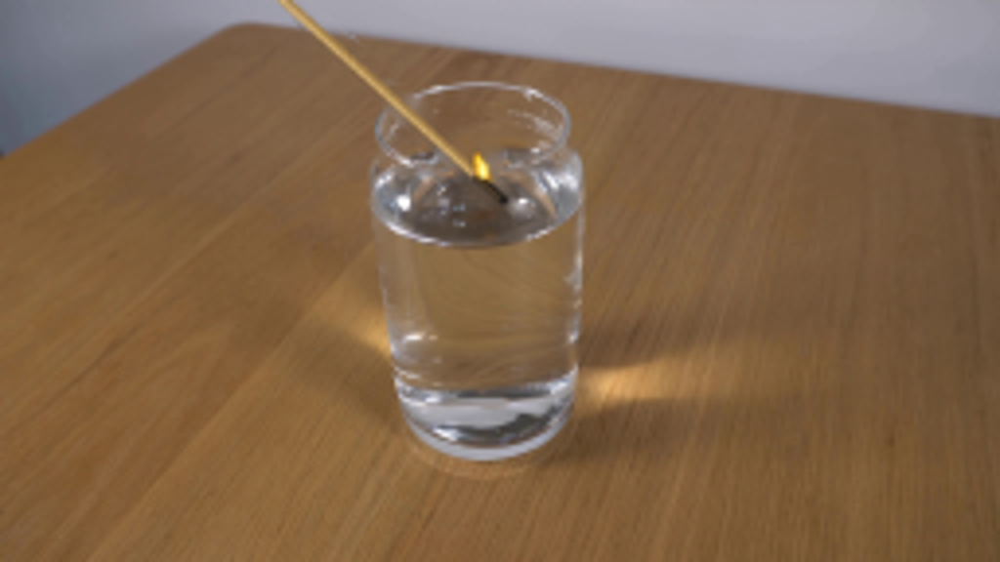

CODING AGENTS AS PIXEL WORLD MODELS
traex/GPT-6.1-Sol · 0111
点击播放 · 原生 RGB 像素
逐轮保存的候选
回放视频、检查图与代码变化。
每份候选均可单独播放。实际图片检查记录在下方工具轨迹中。
候选 01播放与检查图
点击播放 · 原生 RGB 像素

展开代码变化
--- 上一保存版本
+++ 本次保存版本
@@ -0,0 +1,147 @@
+from pathlib import Path
+import math
+import numpy as np
+import cv2
+from PIL import Image, ImageDraw, ImageFilter
+from scipy.ndimage import gaussian_filter
+import artifact_io
+
+ROOT = Path(__file__).resolve().parent
+W,H=256,144
+S=4
+src=np.asarray(Image.open(ROOT/'first_frame.png').convert('RGB'))
+
+def line_mask(a,b,width):
+ mask=Image.new('L',(W*S,H*S),0)
+ d=ImageDraw.Draw(mask)
+ d.line(tuple((int(x*S),int(y*S)) for x,y in (a,b)),fill=255,width=round(width*S))
+ r=width*S/2
+ for x,y in (a,b):
+ d.ellipse((x*S-r,y*S-r,x*S+r,y*S+r),fill=255)
+ return np.asarray(mask.resize((W,H),Image.Resampling.LANCZOS))
+
+mask=line_mask((72.5,-2),(122,44.5),5.2)
+mm=Image.fromarray(mask)
+d=ImageDraw.Draw(mm)
+d.ellipse((119,33,128,47),fill=255)
+d.polygon([(119,44),(125,43),(135,54),(131,57),(120,48)],fill=255)
+mask=np.array(mm)
+# Non-learned texture continuation for the vacated match and its reflection.
+plate=cv2.inpaint(src,np.where(mask>12,255,0).astype('uint8'),3.0,cv2.INPAINT_TELEA)
+Image.fromarray(plate).save(ROOT/'.tmp/clean.png')
+
+Y,X=np.mgrid[0:H,0:W].astype(np.float32)
+
+def rgba_canvas():
+ return Image.new('RGBA',(W*S,H*S),(0,0,0,0))
+def line(draw,xy,fill,width):
+ draw.line([(round(x*S),round(y*S)) for x,y in xy], fill=fill,width=max(1,round(width*S)))
+def ellipse(draw,box,fill):
+ draw.ellipse(tuple(round(v*S) for v in box),fill=fill)
+def polygon(draw,pts,fill):
+ draw.polygon([(round(x*S),round(y*S)) for x,y in pts],fill=fill)
+
+def compose(base,lay,blur=0.22):
+ lay=lay.resize((W,H),Image.Resampling.LANCZOS)
+ if blur: lay=lay.filter(ImageFilter.GaussianBlur(blur))
+ return Image.alpha_composite(base.convert('RGBA'),lay)
+
+
+def generate_frame(i):
+ if i==0:return src.copy()
+ t=i/4
+ # A gently decelerating, continuous lowering motion. No camera movement.
+ dur=2.8
+ p=min(t/dur,1)
+ dy=19.0*(p if p<0.8 else (0.8+0.2*(1-(1-(p-.8)/.2)**2)))
+ dx=0.12*dy
+ tipx,tipy=123.5+dx,44.4+dy
+ # The flame dies as the burning head reaches the water.
+ extinction=0.55
+ alive=max(0,min(1,(extinction-t)/.27))
+ # Surface displacement rings from the small submerged match.
+ b=plate.astype(np.float32)
+ tt=t-.42
+ if tt>0:
+ xx=X-125.0; yy=(Y-49)/.38
+ r=np.sqrt(xx*xx+yy*yy)
+ water=( ((X-122)/26)**2+((Y-50)/12)**2 < .94 )
+ env=np.exp(-((r-9.5*tt)/3.0)**2)*np.exp(-tt/1.2)
+ rip=np.sin((r-9.5*tt)*2.0)*env*water
+ mapx=X+0.18*rip*xx/(r+1)
+ mapy=Y+.13*rip*yy/(r+1)
+ b=cv2.remap(b,mapx.astype(np.float32),mapy.astype(np.float32),cv2.INTER_LINEAR,borderMode=cv2.BORDER_REFLECT)
+ b+=rip[:,:,None]*np.array([1.8,1.8,1.5])
+ base=Image.fromarray(np.uint8(np.clip(b,0,255))).convert('RGBA')
+ # Surface reflection, dimming as the flame enters the water.
+ reflect=rgba_canvas();dr=ImageDraw.Draw(reflect)
+ if dy<5:
+ alpha=int(190*max(0,1-dy/5))
+ line(dr,[(122.5+dx,46+dy*.2),(129.6+dx,53.1+dy*.25)],(28,25,20,alpha),2.1)
+ line(dr,[(125+dx,48+dy*.3),(130+dx,53.2+dy*.3)],(28,28,28,int(alpha*.6)),2.3)
+ if alive>0:
+ ellipse(dr,(122+dx,45,126+dx,47),(255,182,42,int(120*alive)))
+ base=compose(base,reflect,.38)
+
+ # Solid wooden shaft, smoothly shaded and slightly rough.
+ lay=rgba_canvas();d=ImageDraw.Draw(lay)
+ a=np.array([72.5+dx,-2+dy]);end=np.array([tipx,tipy]);u=(end-a);u/=np.linalg.norm(u)
+ n=np.array([-u[1],u[0]])
+ # Top is always outside the frame; no hand or other equipment enters.
+ a=a-u*90
+ woodend=end-u*2.7
+ def woodsegment(start,stop,under=False):
+ colors=[(156,118,62,235),(186,150,90,255),(204,169,108,255),(214,180,120,250)]
+ if under: colors=[(137,115,77,170),(163,137,94,190),(179,150,101,180),(188,157,107,170)]
+ poly=[start-n*1.22,stop-n*1.22,stop+n*1.22,start+n*1.22]
+ polygon(d,poly,colors[1])
+ for off,w,col in [(-.85,.5,colors[0]),(-.3,.6,colors[1]),(.3,.55,colors[2]),(.8,.35,colors[3])]:
+ line(d,[start+n*off,stop+n*off],col,w)
+ for j in np.arange(0,np.linalg.norm(stop-start),1.1):
+ loc=start+u*j
+ v=.5*math.sin(j*3.61)
+ line(d,[loc+n*v,loc+n*v+u*.45],(112,88,45,24 if not under else 12),.24)
+ # Apparent surface entry location and muted underwater shaft.
+ if woodend[1]>48:
+ z=(48-a[1])/(woodend[1]-a[1]);cross=a+z*(woodend-a)
+ woodsegment(a,cross)
+ woodsegment(cross,woodend,True)
+ else:
+ woodsegment(a,woodend)
+ charalpha=225 if tipy<48 else 160
+ # Burnt end remains visibly dark after extinction.
+ line(d,[woodend,end],(43,35,27,charalpha),2.45)
+ line(d,[woodend+n*.6,end+n*.6-u*.5],(75,57,34,int(charalpha*.8)),.65)
+ ellipse(d,(tipx-1.05,tipy-1.05,tipx+1.05,tipy+1.05),(31,28,26,charalpha))
+ base=compose(base,lay,.23)
+
+ # Warm luminous flame remains vertical while the match is moving.
+ if alive>0:
+ flame=rgba_canvas();df=ImageDraw.Draw(flame)
+ fx=tipx-.1;fy=tipy-1.1
+ hh=(7.3+.55*math.sin(15*t))*alive
+ sway=.5*math.sin(18*t)
+ pts=[(fx-1.3,fy),(fx-2.0,fy-hh*.35),(fx-1.8+sway,fy-hh*.68),
+ (fx-1.1+sway,fy-hh),(fx+.2+sway,fy-hh*.73),(fx+1.0,fy-hh*.42),(fx+1.4,fy-.7),(fx+.8,fy+.6)]
+ polygon(df,pts,(255,180,22,255))
+ ellipse(df,(fx-1.1,fy-hh*.56,fx+1,fy+.05),(255,223,87,255))
+ polygon(df,[(fx-.6,fy),(fx-.9,fy-hh*.37),(fx-.7+sway,fy-hh*.75),(fx+.4,fy-hh*.32),(fx+.65,fy-.2)],(255,248,161,255))
+ glow=flame.resize((W,H),Image.Resampling.LANCZOS).filter(ImageFilter.GaussianBlur(1.15))
+ ga=np.asarray(glow).copy();ga[:,:,3]=(ga[:,:,3]*.38).astype(np.uint8)
+ base=Image.alpha_composite(base,Image.fromarray(ga))
+ base=compose(base,flame,.33)
+ # A tiny, transient curl of vapour at contact, not a sustained underwater flame.
+ age=t-extinction
+ if 0<age<.65:
+ smoke=rgba_canvas();ds=ImageDraw.Draw(smoke)
+ for k in range(2):
+ pts=[]
+ for j in range(18):
+ h=j/17*(4+age*9)
+ pts.append((125+.3*k+math.sin(h*.7+age*8)*.7,48-h-age*2))
+ line(ds,pts,(201,196,185,int(21*(1-age/.65))),.8)
+ base=compose(base,smoke,.65)
+ return np.asarray(base.convert('RGB'))
+
+frames=np.stack([generate_frame(i) for i in range(20)])
+artifact_io.save(frames,ROOT)
候选 02播放与检查图
点击播放 · 原生 RGB 像素


展开代码变化
--- 上一保存版本
+++ 本次保存版本
@@ -20,7 +20,7 @@
d.ellipse((x*S-r,y*S-r,x*S+r,y*S+r),fill=255)
return np.asarray(mask.resize((W,H),Image.Resampling.LANCZOS))
-mask=line_mask((72.5,-2),(122,44.5),5.2)
+mask=line_mask((72.5,-2),(122,44.5),7.0)
mm=Image.fromarray(mask)
d=ImageDraw.Draw(mm)
d.ellipse((119,33,128,47),fill=255)
@@ -28,6 +28,12 @@
mask=np.array(mm)
# Non-learned texture continuation for the vacated match and its reflection.
plate=cv2.inpaint(src,np.where(mask>12,255,0).astype('uint8'),3.0,cv2.INPAINT_TELEA)
+# Carry the existing wall/table boundary through the very small occluded
+# interval instead of smearing the two surfaces together.
+gy,gx=np.mgrid[0:H,0:W].astype(np.float32)
+nearby=cv2.remap(src,gx+13,gy+1.28,cv2.INTER_LINEAR,borderMode=cv2.BORDER_REFLECT)
+blend=(mask.astype(np.float32)/255)*np.clip((22-gy)/7,0,1)
+plate=np.uint8(np.clip(plate*(1-blend[:,:,None])+nearby*blend[:,:,None],0,255))
Image.fromarray(plate).save(ROOT/'.tmp/clean.png')
Y,X=np.mgrid[0:H,0:W].astype(np.float32)
候选 03播放与检查图
候选 04播放与检查图
点击播放 · 原生 RGB 像素


展开代码变化
--- 上一保存版本
+++ 本次保存版本
@@ -59,11 +59,11 @@
# A gently decelerating, continuous lowering motion. No camera movement.
dur=2.8
p=min(t/dur,1)
- dy=19.0*(p if p<0.8 else (0.8+0.2*(1-(1-(p-.8)/.2)**2)))
+ dy=23.0*(p if p<0.8 else (0.8+0.2*(1-(1-(p-.8)/.2)**2)))
dx=0.12*dy
tipx,tipy=123.5+dx,44.4+dy
# The flame dies as the burning head reaches the water.
- extinction=0.55
+ extinction=0.5
alive=max(0,min(1,(extinction-t)/.27))
# Surface displacement rings from the small submerged match.
b=plate.astype(np.float32)
@@ -83,8 +83,6 @@
reflect=rgba_canvas();dr=ImageDraw.Draw(reflect)
if dy<5:
alpha=int(190*max(0,1-dy/5))
- line(dr,[(122.5+dx,46+dy*.2),(129.6+dx,53.1+dy*.25)],(28,25,20,alpha),2.1)
- line(dr,[(125+dx,48+dy*.3),(130+dx,53.2+dy*.3)],(28,28,28,int(alpha*.6)),2.3)
if alive>0:
ellipse(dr,(122+dx,45,126+dx,47),(255,182,42,int(120*alive)))
base=compose(base,reflect,.38)
@@ -116,9 +114,11 @@
woodsegment(a,woodend)
charalpha=225 if tipy<48 else 160
# Burnt end remains visibly dark after extinction.
- line(d,[woodend,end],(43,35,27,charalpha),2.45)
- line(d,[woodend+n*.6,end+n*.6-u*.5],(75,57,34,int(charalpha*.8)),.65)
- ellipse(d,(tipx-1.05,tipy-1.05,tipx+1.05,tipy+1.05),(31,28,26,charalpha))
+ darkend=end+u*7.0
+ line(d,[woodend,darkend],(43,35,27,charalpha),2.45)
+ line(d,[woodend+n*.6,darkend+n*.6-u*.5],(75,57,34,int(charalpha*.8)),.65)
+ ex,ey=darkend
+ ellipse(d,(ex-1.05,ey-1.05,ex+1.05,ey+1.05),(31,28,26,charalpha))
base=compose(base,lay,.23)
# Warm luminous flame remains vertical while the match is moving.
可观测工具轨迹
实际执行的命令与返回图片。
命令 1exit 0
/bin/bash -lc 'ls -la && cat prompt.txt && cat GENERATION_RULES.md'
命令 2exit 0
/bin/bash -lc "cat artifact_io.py && python - <<'PY'
from PIL import Image
im=Image.open('first_frame.png');print(im.size);im.resize((1024,576)).save('.tmp/large.png')
PY"命令 3exit 0
/bin/bash -lc "python - <<'PY'
from PIL import Image
im=Image.open('first_frame.png'); im.crop((85,20,153,74)).resize((816,648)).save('.tmp/crop.png')
import importlib.util
for s in ['numpy','PIL','scipy','cv2']:
print(s, bool(importlib.util.find_spec(s)))
PY"命令 4exit 1
/bin/bash -lc "cat > generate.py <<'PY'
from pathlib import Path
import math
import numpy as np
import cv2
from PIL import Image, ImageDraw, ImageFilter
from scipy.ndimage import gaussian_filter
import artifact_io
ROOT = Path(__file__).resolve().parent
W,H=256,144
S=4
src=np.asarray(Image.open(ROOT/'first_frame.png').convert('RGB'))
def line_mask(a,b,width):
mask=Image.new('L',(W*S,H*S),0)
d=ImageDraw.Draw(mask)
d.line(tuple((int(x*S),int(y*S)) for x,y in (a,b)),fill=255,width=round(width*S))
r=width*S/2
for x,y in (a,b):
d.ellipse((x*S-r,y*S-r,x*S+r,y*S+r),fill=255)
return np.asarray(mask.resize((W,H),Image.Resampling.LANCZOS))
mask=line_mask((72.5,-2),(122,44.5),5.2)
mm=Image.fromarray(mask)
d=ImageDraw.Draw(mm)
d.ellipse((119,33,128,47),fill=255)
d.polygon([(119,44),(125,43),(135,54),(131,57),(120,48)],fill=255)
mask=np.array(mm)
# Non-learned texture continuation for the vacated match and its reflection.
plate=cv2.inpaint(src,np.where(mask>12,255,0).astype('uint8'),3.0,cv2.INPAINT_TELEA)
Image.fromarray(plate).save(ROOT/'.tmp/clean.png')
Y,X=np.mgrid[0:H,0:W].astype(np.float32)
def rgba_canvas():
return Image.new('RGBA',(W*S,H*S),(0,0,0,0))
def line(draw,xy,fill,width):
draw.line([(round(x*S),round(y*S)) for x,y in xy], fill=fill,width=max(1,round(width*S)))
def ellipse(draw,box,fill):
draw.ellipse(tuple(round(v*S) for v in box),fill=fill)
def polygon(draw,pts,fill):
draw.polygon([(round(x*S),round(y*S)) for x,y in pts],fill=fill)
def compose(base,lay,blur=0.22):
lay=lay.resize((W,H),Image.Resampling.LANCZOS)
if blur: lay=lay.filter(ImageFilter.GaussianBlur(blur))
return Image.alpha_composite(base.convert('RGBA'),lay)
def generate_frame(i):
if i==0:return src.copy()
t=i/4
# A gently decelerating, continuous lowering motion. No camera movement.
dur=2.8
p=min(t/dur,1)
dy=19.0*(p if p<0.8 else (0.8+0.2*(1-(1-(p-.8)/.2)**2)))
dx=0.12*dy
tipx,tipy=123.5+dx,44.4+dy
# The flame dies as the burning head reaches the water.
extinction=0.55
alive=max(0,min(1,(extinction-t)/.27))
# Surface displacement rings from the small submerged match.
b=plate.astype(np.float32)
tt=t-.42
if tt>0:
xx=X-125.0; yy=(Y-49)/.38
r=np.sqrt(xx*xx+yy*yy)
water=( ((X-122)/26)**2+((Y-50)/12)**2 < .94 )
env=np.exp(-((r-9.5*tt)/3.0)**2)*np.exp(-tt/1.2)
rip=np.sin((r-9.5*tt)*2.0)*env*water
mapx=X+0.18*rip*xx/(r+1)
mapy=Y+.13*rip*yy/(r+1)
b=cv2.remap(b,mapx,mapy,cv2.INTER_LINEAR,borderMode=cv2.BORDER_REFLECT)
b+=rip[:,:,None]*np.array([1.8,1.8,1.5])
base=Image.fromarray(np.uint8(np.clip(b,0,255))).convert('RGBA')
# Surface reflection, dimming as the flame enters the water.
reflect=rgba_canvas();dr=ImageDraw.Draw(reflect)
if dy<5:
alpha=int(190*max(0,1-dy/5))
line(dr,[(122.5+dx,46+dy*.2),(129.6+dx,53.1+dy*.25)],(28,25,20,alpha),2.1)
line(dr,[(125+dx,48+dy*.3),(130+dx,53.2+dy*.3)],(28,28,28,int(alpha*.6)),2.3)
if alive>0:
ellipse(dr,(122+dx,45,126+dx,47),(255,182,42,int(120*alive)))
base=compose(base,reflect,.38)
# Solid wooden shaft, smoothly shaded and slightly rough.
lay=rgba_canvas();d=ImageDraw.Draw(lay)
a=np.array([72.5+dx,-2+dy]);end=np.array([tipx,tipy]);u=(end-a);u/=np.linalg.norm(u)
n=np.array([-u[1],u[0]])
# Top is always outside the frame; no hand or other equipment enters.
a=a-u*90
woodend=end-u*2.7
def woodsegment(start,stop,under=False):
colors=[(156,118,62,235),(186,150,90,255),(204,169,108,255),(214,180,120,250)]
if under: colors=[(137,115,77,170),(163,137,94,190),(179,150,101,180),(188,157,107,170)]
poly=[start-n*1.22,stop-n*1.22,stop+n*1.22,start+n*1.22]
polygon(d,poly,colors[1])
for off,w,col in [(-.85,.5,colors[0]),(-.3,.6,colors[1]),(.3,.55,colors[2]),(.8,.35,colors[3])]:
line(d,[start+n*off,stop+n*off],col,w)
for j in np.arange(0,np.linalg.norm(stop-start),1.1):
loc=start+u*j
v=.5*math.sin(j*3.61)
line(d,[loc+n*v,loc+n*v+u*.45],(112,88,45,24 if not under else 12),.24)
# Apparent surface entry location and muted underwater shaft.
if woodend[1]>48:
z=(48-a[1])/(woodend[1]-a[1]);cross=a+z*(woodend-a)
woodsegment(a,cross)
woodsegment(cross,woodend,True)
else:
woodsegment(a,woodend)
charalpha=225 if tipy<48 else 160
# Burnt end remains visibly dark after extinction.
line(d,[woodend,end],(43,35,27,charalpha),2.45)
line(d,[woodend+n*.6,end+n*.6-u*.5],(75,57,34,int(charalpha*.8)),.65)
ellipse(d,(tipx-1.05,tipy-1.05,tipx+1.05,tipy+1.05),(31,28,26,charalpha))
base=compose(base,lay,.23)
# Warm luminous flame remains vertical while the match is moving.
if alive>0:
flame=rgba_canvas();df=ImageDraw.Draw(flame)
fx=tipx-.1;fy=tipy-1.1
hh=(7.3+.55*math.sin(15*t))*alive
sway=.5*math.sin(18*t)
pts=[(fx-1.3,fy),(fx-2.0,fy-hh*.35),(fx-1.8+sway,fy-hh*.68),
(fx-1.1+sway,fy-hh),(fx+.2+sway,fy-hh*.73),(fx+1.0,fy-hh*.42),(fx+1.4,fy-.7),(fx+.8,fy+.6)]
polygon(df,pts,(255,180,22,255))
ellipse(df,(fx-1.1,fy-hh*.56,fx+1,fy+.05),(255,223,87,255))
polygon(df,[(fx-.6,fy),(fx-.9,fy-hh*.37),(fx-.7+sway,fy-hh*.75),(fx+.4,fy-hh*.32),(fx+.65,fy-.2)],(255,248,161,255))
glow=flame.resize((W,H),Image.Resampling.LANCZOS).filter(ImageFilter.GaussianBlur(1.15))
ga=np.asarray(glow).copy();ga[:,:,3]=(ga[:,:,3]*.38).astype(np.uint8)
base=Image.alpha_composite(base,Image.fromarray(ga))
base=compose(base,flame,.33)
# A tiny, transient curl of vapour at contact, not a sustained underwater flame.
age=t-extinction
if 0<age<.65:
smoke=rgba_canvas();ds=ImageDraw.Draw(smoke)
for k in range(2):
pts=[]
for j in range(18):
h=j/17*(4+age*9)
pts.append((125+.3*k+math.sin(h*.7+age*8)*.7,48-h-age*2))
line(ds,pts,(201,196,185,int(21*(1-age/.65))),.8)
base=compose(base,smoke,.65)
return np.asarray(base.convert('RGB'))
frames=np.stack([generate_frame(i) for i in range(20)])
artifact_io.save(frames,ROOT)
PY
python generate.py"命令 5exit 0
/bin/bash -lc "sed -i 's/cv2.remap(b,mapx,mapy,/cv2.remap(b,mapx.astype(np.float32),mapy.astype(np.float32),/' generate.py python generate.py"
命令 6exit 0
/bin/bash -lc "python - <<'PY'
from PIL import Image
im=Image.open('frames/19.png'); im.resize((1024,576)).save('.tmp/endlarge.png')
im=Image.open('frames/01.png'); im.resize((1024,576)).save('.tmp/one.png')
PY"命令 7exit 0
/bin/bash -lc "python - <<'PY'
from PIL import Image
im=Image.open('first_frame.png');im.crop((65,0,130,50)).resize((780,600)).save('.tmp/shaft.png')
PY"命令 8exit 0
/bin/bash -lc "python generate.py
python - <<'PY'
from PIL import Image
im=Image.open('frames/19.png'); im.resize((1024,576)).save('.tmp/endlarge.png')
PY"命令 9exit 0
/bin/bash -lc "python generate.py
python - <<'PY'
from PIL import Image
im=Image.open('frames/01.png'); im.resize((1024,576)).save('.tmp/one.png')
im=Image.open('frames/19.png'); im.resize((1024,576)).save('.tmp/endlarge.png')
PY"命令 10exit 0
/bin/bash -lc "python - <<'PY'
from pathlib import Path
from PIL import Image
import numpy as np
p=np.load('pixels.npz')['pixels']
a=np.asarray(Image.open('first_frame.png').convert('RGB'),dtype=np.uint32)
assert p.shape == (144,256,20)
assert np.array_equal(p[:,:,0], (a[:,:,0]<<16)|(a[:,:,1]<<8)|a[:,:,2])
assert len(list(Path('frames').glob('*.png'))) == 20
print('Verified: 20 RGB frames, 256x144, first frame pixel-identical.')
PY"视觉工具实际返回图片 1

视觉工具实际返回图片 2
视觉工具实际返回图片 3

视觉工具实际返回图片 4

视觉工具实际返回图片 5
视觉工具实际返回图片 6

视觉工具实际返回图片 7

视觉工具实际返回图片 8

视觉工具实际返回图片 9
保存候选 4 份；完成命令 10 次；可验证图片返回 9 张。原始 API 响应与完整日志保留在本地。